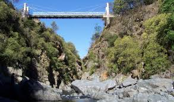

Del quechua “corral de piedra”, Alpa Corral es un rincón serrano para disfrutar del río Las Barrancas. De aguas cristalinas, su caudal se forma en el paraje Unión de los Ríos, por la confluencia de los ríos El Talita y Las Moras.
Sus senderos y circuitos son ideales para las actividades al aire libre como caminatas, paseos en bici y travesías a caballo. Atravesando los bosques serranos y la costanera del río es posible llegar hasta increíbles miradores. En el camino, son postales imperdibles la capilla Hambaré, la iglesia Nuestra Señora del Tránsito, la gruta de Lourdes y el puente colgante.